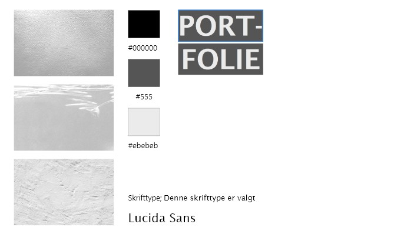
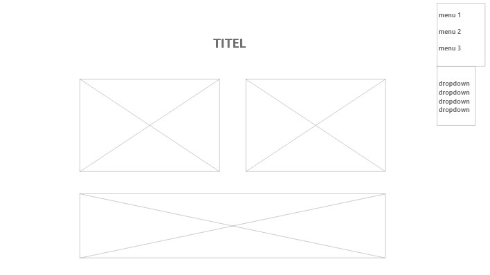

Tema 6
Portfolio eksamen - Beskrivelse og dokumentation af proces.
Stiletyle
Wireframe
Formålet med denne opgave er at kode et portfolio website hvor alle opgaverne fra 1. semester bliver præsenteret. Det er kodet fra bunden i HTML og CSS og jeg har derudover brug Javascript til at lave en dropdown menu.
Jeg har valgt at arbejde med tekstur som hovedelementet i mit design. Jeg har lagt gennemsigtige filtre hen over mine valgte farver for at opnå en tekstureret baggrund og dette har jeg gjort i CSS ved blot at vælge en baggrundsfarve ved hjælp af farvekoden og herefter lægge et baggrundsbillede ind over. Fonten jeg har valgt er en sans serif da jeg gik efter et minimalistisk udtryk